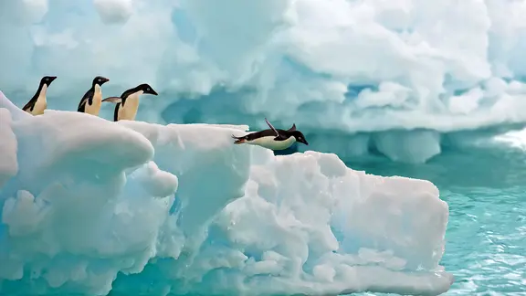
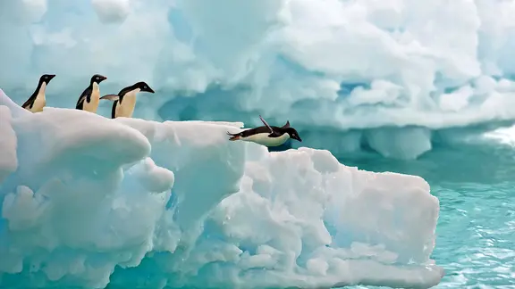

The Interactive Biodiversity Adventure
A static but immersive exhibit that brings four extreme ecosystems together in one model, designed for clear understanding and strong visual impact.
 


One model, four ecosystems. Scan the QR code to explore how life adapts in each biome while viewing the physical exhibit.
This exhibit presents four major ecosystems, the Ocean, Rainforest, Antarctic, and Desert, in a single integrated model. It demonstrates how biodiversity varies across regions and how life forms adapt to different environmental conditions.
The project aims to provide a clear and accessible understanding of global ecosystems through a visually organised and scientifically accurate display, supporting both classroom learning and independent exploration.
The ocean section uses layered waves and structured depth to represent pressure, motion, and changing light conditions. Species are positioned to reflect real marine zones, from surface organisms to deeper life forms.
This part of the model illustrates how marine life adjusts to:
- Reduced light with increasing depth
- Higher pressure at deeper levels
- Constant water movement and currents
The rainforest section uses layered foliage and canopy levels to show how life occupies every vertical zone, from the forest floor to the upper canopy. The arrangement reflects the complexity of rainforest structure and interactions.
It highlights:
- High species richness and variety
- Complex, interlinked food webs
- Strong links between climate, water, and plant growth
The Antarctic section uses crisp ice plates and a limited colour palette to represent a low-temperature, low-light environment. The species placed here reflect the specialised life that survives in polar conditions.
It focuses on:
- Adaptations to extreme cold
- Strong seasonal changes in daylight
- Fewer but highly specialised species
The desert section uses dune-like surfaces and sparse vegetation to show survival under limited water and intense heat. The layout reflects how organisms manage temperature and water use.
It illustrates:
- Water storage and conservation strategies
- Nocturnal activity to avoid daytime heat
- Adaptations for managing strong light and high temperatures
About the Project
This exhibit presents four major ecosystems, the Ocean, Rainforest, Antarctic, and Desert, in a single model. It demonstrates how biodiversity varies across regions and how life forms adapt to different environmental conditions. The project aims to offer a clear, accessible understanding of global ecosystems through a visually organised and scientifically accurate display.
1. Principle
The model is based on the scientific concept that biodiversity changes across the planet due to variations in climate, landforms, and ecological relationships. By placing four contrasting habitats together, the exhibit highlights how organisms adapt, survive, and interact within their specific ecosystems.
The aim is to transform classroom theory into a clear visual representation that supports accurate and meaningful learning for students and viewers.
2. Method
The construction of the model followed a systematic and detail-oriented process designed to maintain scientific balance and visual clarity.
- Selected four ecosystems with strong contrasts to ensure both visual impact and scientific relevance.
- Created environment-specific textures, including wave layers for the Ocean, multi-level foliage for the Rainforest, ice formations for the Antarctic, and dune-like surfaces for the Desert.
- Chose species based on real ecological patterns and positioned them according to natural distribution within each habitat.
- Linked all sections in a smooth layout to guide viewers through each ecosystem in a logical sequence.
- Maintained a static design that emphasises precision, realism, and professional finishing suitable for academic display.
3. Applications
The model supports learning across multiple subject areas and promotes stronger understanding of environmental concepts.
- Helps students understand how organisms respond to climate, terrain, and available resources.
- Enables clear comparison of adaptations, food chains, and ecosystem functioning across different habitats.
- Strengthens environmental awareness by showing why sensitive regions, such as rainforests and polar zones, require protection.
- Develops skills in research, model building, spatial design, and collaboration.
- Connects directly to concepts taught in Biology, Geography, and environmental science.
- Encourages analytical thinking relevant to STEM fields and sustainable decision-making.
4. Unique features
This exhibit includes several distinguishing features that enhance both its educational value and presentation quality.
- Four visually contrasting ecosystems displayed together for immediate comparison and understanding.
- Detailed textures, accurate species placement, and realistic environmental structures across all sections.
- A static, stable design that prioritises clarity, scientific accuracy, and durability over mechanical complexity.
- A layout that offers a concise overview of global biodiversity in a single glance.
- A professional finish achieved through careful planning, disciplined craftsmanship, and teamwork.
5. Future scope
The model provides a strong base for future development and expansion into larger or more advanced projects.
- Additional ecosystems, such as tundra, wetlands, or mangroves, can be added to extend biodiversity coverage.
- Interactive elements, such as elevation layers or QR-linked digital information, can further support independent learning.
- The stable structure allows upgrades for exhibitions, interdisciplinary work, and long-term academic use.
- The design supports ongoing use in geography, science, and design activities within the classroom and beyond.
Conclusion
The Interactive Biodiversity Adventure presents four ecosystems in a unified model that demonstrates the diversity, adaptability, and ecological relationships that define life on Earth.
Its focus on structure, accuracy, and detail allows viewers to understand each habitat clearly while appreciating the broader patterns of global biodiversity. Beyond its visual quality, the model functions as an effective educational tool that links ideas from biology, geography, and environmental science.
It represents a well-designed and academically sound exhibit that encourages curiosity, responsible thinking, and deeper appreciation of the natural world.
Research and development by Azmathunisa and Khadija.